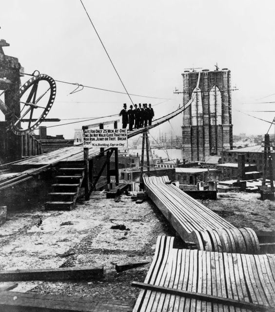
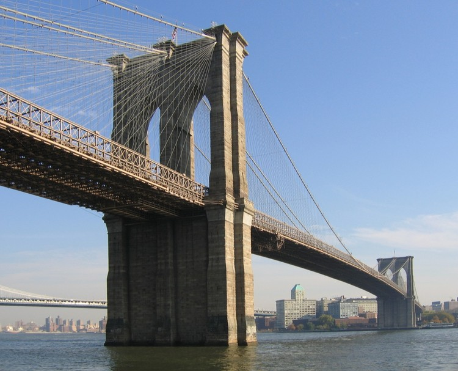

Social and Urban Development
 The bridge played a crucial role in the social and urban development of New York City. It connected diverse communities, fostering interaction and integration. The areas surrounding the bridge experienced a surge in population and development, shaping the urban landscapes of both Manhattan and Brooklyn and contributing to the city's demographic diversity.